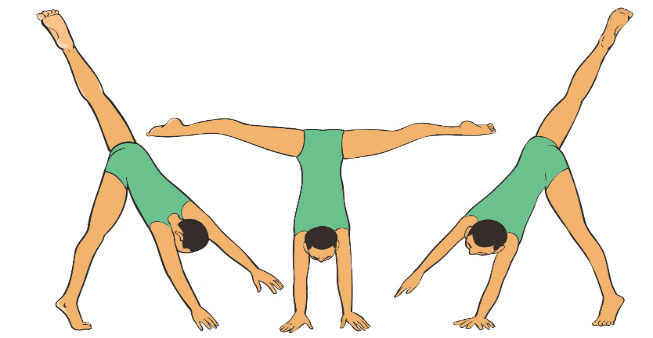

- (iv) Kick your back leg up, followed by the front leg passing your body through a handstand position briefly;
- (v) Land with one foot at a time, finishing in a lunge facing the opposite direction, Figure 4.4; and
- (vi) Repeat it to perfect the movement.

a b cFigure 4.4: Cartwheel
Splits
Split gymnastics refers to any movement, skill, or position in gymnastics that involves splitting the legs apart in opposite directions. Splits are fundamental for flexibility and are used in various routines, including floor exercises, balance beams, and bars. The types of splits include front splits (right or left), middle splits (straddle splits), over splits, standing splits and split leaps or jumps. The following steps will help you practice the basic front split:
- (i) Step one leg forward into a deep lunge, keeping the back leg extended with an upright chest for 20 – 30 seconds on each side;
- (ii) From the lunge position, straighten the front leg and try to reach the toes keeping your back straight for 20 – 30 seconds;
- (iii) Sit down and press the soles of your feet together, gently push your knees toward the floor and hold for a while;